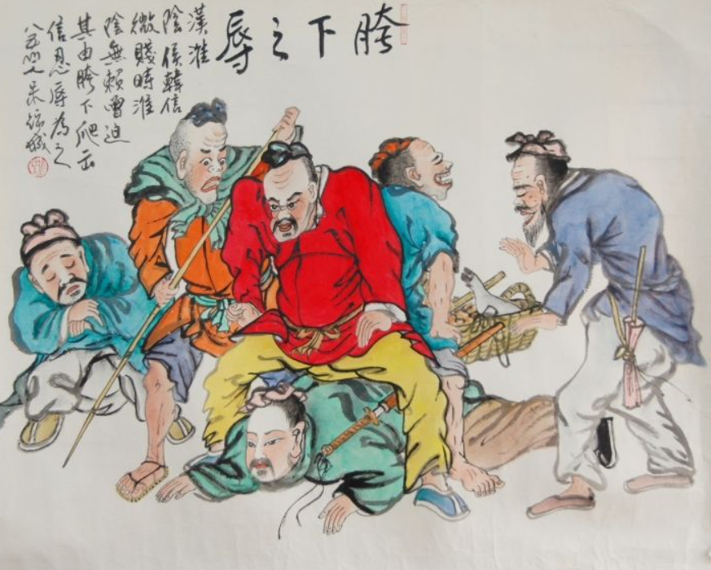

한신의 집안은 왕족과는 거리가 먼 별 볼 일 없고 가난한 집안에 지나지 않았다. 가난하게 자란 탓에 한신 본인의 품행도 그다지 단정하지 못해 어디서 추천도 받지 못했다. 한신의 키는 꽤 큰 편으로 보이지만 장사꾼 노릇도 그럴 듯하게 하지 못해 항상 누군가에게 빌붙어서 밥을 얻어먹는 백수 신세였다. 이 때문에 주위 사람들은 거의 한신을 겁쟁이로 업신여기면서 싫어했다.
그러다가 한신의 어머니가 세상을 떠났는데, 한신은 장례를 치를 비용도 없었다. 그러나 물기 없는 높은 곳에 어머니를 매장하여 마치 그 주위에 1만여 가를 둔 것 같이 했는데, 사마천(司馬遷)은 자신이 직접 회음에 가보니 진짜로 그러하였고, 한신이 그때 상황은 막장이었어도 뜻은 높은 곳에 두고 있었다고 말했다.
그러나 묏자리를 잘 쓴다고 해서 당장 없는 밥이 생기는 것도 아니었다. 비참한 꼴이 된 한신은 알고 지내던 정장(亭長)의 신세를 지며 밥을 빌어먹었는데, 정장의 아내가 한신을 대단히 싫어해 일부러 새벽에 남편의 밥을 지어 먹여 한신이 빈대짓을 하지 못하게 만들었다. 한신은 그 뜻을 알고 정장과 절교하고 다시는 그 집에 가지 않았다.
그렇지만 딱히 밥을 벌어 먹을 수 있는 재주도 없고, 굶주린 채 낚시터를 어슬렁거렸는데, 빨래 하던 아낙네가 그 모습을 불쌍히 여겨 한신에게 밥을 주었고, 한신은 그걸 얻어먹으면서 굶주림을 해결했다. 며칠을 이렇게 얻어먹자, 한신은 워낙 고마워서 아낙네에게 이렇게 약속하였다.
그러나 그 말을 들은 아낙네는 성을 내었다.
그러나 훗날 한신은 진짜로 약속을 지켰다.
이렇게 동네 아낙네들에게도 무시당할 지경인데, 젊은 사람들에게는 말할 나위도 없었다. 어느 날 회음의 젊은 사람들 중 백정 한 명이 대놓고 한신을 욕하면서 소리쳤다.
한신은 한참을 물끄러미 바라보더니, 허리를 굽혀서 가랑이 사이를 질질 지나갔다. 마침 길거리에 있던 사람들 모두가 그 모습을 보고는 비웃음을 터뜨리면서 한신에게 겁쟁이라고 놀려대었다. 이 사건으로 한신은 고향에서 그야말로 웃음거리 신세로 떨어져버렸다. 용저가 훗날 이 이야기들을 들먹인 걸 보면 어지간히 유명한 일이었던 듯 하다. 한신이 떠들고 다녔을 리는 없을 테고.
